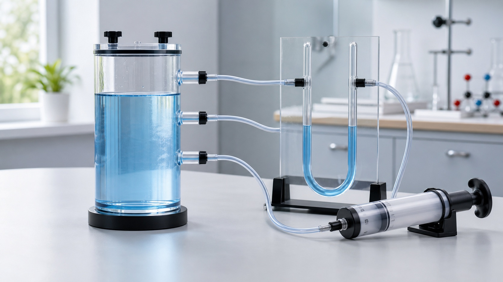

下册 · 第九章 · 压强
同样的力，为什么效果差很多？
压强把压力与受力面积联系起来；液体、大气和流动的气体又让“压力如何传递”变得更丰富。
知识桥梁
先辨认压力，再比较作用效果
压力是垂直作用在接触面上的力，可能来自重力，也可能与重力大小不同。
第 1 节
压强：压力作用效果的比较
压力一定时，受力面积越小，压强越大；受力面积一定时，压力越大，压强越大。
公式、单位与生活策略
- 物体所受压力与受力面积之比叫作压强，p = F / S。
- 压强单位是帕斯卡，1 Pa = 1 N/m²。
- 面积必须换成 m² 后再代入。
- 刀刃和图钉尖通过减小面积增大压强；履带和宽肩带通过增大面积减小压强。
控制变量：比较压力影响时保持受力面积不变；比较面积影响时保持压力不变。
压力和面积怎样改变作用效果？
箭头看压力 · 底面看面积压强 p10 000 Pa
第 2 节
液体压强：深度和密度共同决定
液体内部向各个方向都有压强；同种液体越深压强越大，同一深度液体密度越大压强越大。
实验判断的三个落点
- 深度从自由液面向下量，不是离容器底的距离。
- 同种液体、同一深度，各方向压强相等。
- 比较液体密度时必须保持探头深度相同。
- p = ρ液gh
连通器：装同种液体且液体静止时，各容器液面保持在同一水平面。
探头越深，U形管怎样变化？
压强差用液面高度差表示液体压强20.0 kPa
水中深度增大，U形管液面高度差随之增大。
船闸怎样利用连通器改变水位？
先平水位，再开闸门关闭两侧闸门，打开上游阀门 A，闸室与上游构成连通器，水位逐渐升高。
第 3 节
大气压强：空气也有重量
托里拆利实验首次准确测出大气压；标准大气压约为 1.013 × 10⁵ Pa，并随海拔升高而减小。
读懂 760 mm 水银柱
- 玻璃管装满水银后倒插入水银槽。
- 管内水银面上方接近真空，槽面受到大气压。
- 平衡时 p₀ = ρ水银gh。
- h 是管内外水银面的竖直高度差，不是管长。
吸管、吸盘和抽水机不是把物体“吸”上来，而是内外压强差产生推动作用。
气压计：水银气压计较准确；无液气压计利用真空金属盒形变测量气压。
玻璃管倾斜，为什么读数不变？
看竖直高度差，不看水银柱长度竖直高度差 760 mm水银柱长度 760 mm
玻璃管竖直时，水银柱长度与竖直高度差相同。
海拔升高时，大气压怎样变化？
3000 m 内：每升高 10 m，约减小 100 Pa近似大气压101.3 kPa
海拔升高，空气柱变短，大气压减小；水的沸点也会降低。
第 4 节 · 跨学科实践
活塞式抽水机：压强差推动水流
装置保持密封，活塞往复运动产生压强差，再由两个只能向上开启的阀门控制水流方向。
一次抽水循环
- 提起
- 下腔压强减小，A 关闭、B 打开，大气压把水推入泵筒。
- 压下
- B 关闭、A 打开，下腔的水穿过活塞进入上腔。
- 再提
- A 关闭，上腔的水被活塞提升并流出；同时 B 打开，下腔再次进水。
设计关键：泵筒密封、活塞贴合筒壁、两个阀门只能向上开启。标准大气压理论上最多支持约 10.3 m 水柱，实际提升高度会更小。
按顺序观察阀门和水流
绿色为开 · 红色为关活塞位于下方，下腔已有水；静止时 A、B 两阀都关闭。
第 5 节
流速越大，压强越小
气体和液体统称流体。流动速度不同会形成压强差，从而产生可观察的力。
从压强差解释现象
- 两张纸中间气流加快，中间压强减小，外侧大气压把纸压向中间。
- 机翼上方气流较快、压强较小，下方压强较大，形成升力。
- 列车高速通过时，人和列车之间空气流速大、压强小，因此要站在安全线外。
- 不是气流把纸“吸”到一起，而是外侧压强更大。
吹气时，两张纸为什么靠拢？
比较纸张内外压强纸张间距逐渐减小
第九章分层检测
不是只看总分，而是看哪种能力需要补强
按层完成，错题会返回对应知识点；挑战层选做。